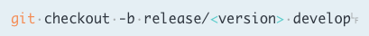
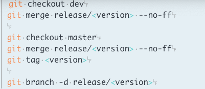
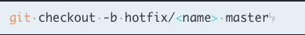
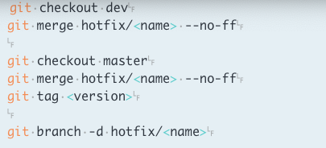

Un workflow ou flux opérationnel, est la représentation d’une suite d'opérations ou de tâches exécutées par une personne ou un groupe de personne.
Parmi les workflow Git, GitFlow est le plus connu publiée par Vincent Driessen (nvie). Le workflow Gitflow définit un modèle de création de branche strict conçu autour de la livraison de projet. Cela fournit un framework solide pour la gestion de projets plus importants
la mauvaise utilisation de git peut causer des pertes de données mais aussi des conflits a chaque comit / merge
GitFlow est une liste de regle qui se basent sur les fonctionnement par branche de git Principe de base: le projet sera basé sur deux branche différente; master et develop auquel l’utilisateur n’aura pas acces en ecriture
la branche master représente le miroir de notre production, on y pousse nos modification directement dans la branche develop on regroupe les nouvelle fonctionnalités qui vont être livrés dans la version suivante, il est conseillé de ne pas faire de modifications directement
Développer des fonctionnalités Donc on va développer dans la branche de type feature
La fonctionnalite suivante qui sera developpe va etre applique a la prochaine version Donc on creer la branche a partir de la branche develop

la nouvelle version pour la production sera dans la branche de type release

En créant la branche release a partir de la branche develop, cela va permettre de lancer des tests et appliquer les correction pendant que d’autres personne de l'équipe développent des nouvelle fonctionnalités pour la version suivante

A la fin des tests la nouvelle version est prête à la mise en production, on pousse tout vers la branche master et on applique les corrections apportée dans la branche développement
En utilisant le numéro de la dernière version, on crée un tag sur le dernier commit de la branche de production et on supprime la branche release car elle ne sert plus a rien pour corriger un bug en production on utilisera la branche de type hotfix

Pour ce cas particulier il est conseillé de créer une branche à partir du miroir de production pour ne pas pousser toutes les fonctionnalités de la branche développement en production

Après avoir corrigé le bug, on doit l’appliquer sur le dev et la prod , supprime la branche hotfix.
GitFlow s'occupe de la création des branches de départ, les branches de fin, de créer les tags et de supprimer les bonnes branches.